2.3. Signal review
Next, we'll calculate some summary statistics for the EEG, at this stage only for the purpose of general QC:
-
do the signals have numerical distributions/ranges broadly as expected for micro-volt scaled human scalp sleep EEG (i.e. on the order of 10s to 100s of units around a mean typically near zero)?
-
are there obvious parts of the recording (signals and/or epochs) that appear aberrant?
-
as a first-pass frequency-based description of the data, do we roughly see the expected 1/f pattern for the EEG power spectra? Are there many obvious spikes or other signs of contamination, e.g. due to electrical noise?
We'll approach this in two stages: first, with some whole-night visualizations based on Hjorth parameters; second, looking only at epochs annotated as N2 sleep (i.e. to remove the often very large sources of variation in signals that arise from stage differences, especially if noisy leading/trailing wake epochs are included).
Whole-night Hjorth statistics
Hjorth statistics are simple and useful summaries for time-series data. There are three parameters:
-
activity: the typical amplitude of the signal (effectively similar to variance or root mean square)
-
mobility: a measure of modal frequency of the signal (based on the first derivative of the signal)
-
complexity: a measure of change in frequency of the signal (based on the second derivative), which can be indicative of how variable/predictable a signal is
As a first pass to review signals, we will calculate these metrics per
channel and per epoch for all recordings, using Luna's SIGSTATS
command, from the first-round harmonized data (harm1.lst):
luna harm1.lst -o out.db -s ' SIGSTATS epoch sig=${eeg} '
This will take a minute or so to run for all subjects.
Keeping track of output
For simplicity, in this walkthorugh, we
tend to overwrite a single out.db, which probably isn't the best
practice for real, larger studies, where it might take a
non-trivial time to generate the output, and where reproducibility is
important. Feel free to swap in different outputs as desired, and
amend the downstream steps accordingly, e.g. if we have a folder named out, one
might instead have used -o out/hjorth.db here (and destrat out/hjorth.db below).
We can then extract all values from the output database to a single plaintext file (hjorth.1):
destrat out.db +SIGSTATS -r E CH > tmp/hjorth.1
Here we'll use R to visualize the output, along with the lunaR library for some convenience plot features used below. Whether you're using a native terminal or JupyterLab, it is a good idea to keep a second window open for analyses in R (mainly visualization), ensuring it has the same working folder as the current main project.
library(luna)
d <- read.table( "tmp/hjorth.1" , header=T, stringsAsFactors=F)
head(d)
ID CH E H1 H2 H3
1 F01 Fp1 1 1504.2979 0.1250687 1.2803008
2 F01 Fp1 2 2916.4841 0.1043487 1.1756639
3 F01 Fp1 3 844.3133 0.1806248 1.1284717
4 F01 Fp1 4 1041.5858 0.1365578 1.1829702
5 F01 Fp1 5 1520.9025 0.1116944 1.1538875
6 F01 Fp1 6 813.8810 0.1815717 0.9670462
The data frame d has 997,176 rows, which reflects the 20 people x 57
EEG channels x 800-900 or so epochs each person has.
The three Hjorth parameters are labelled H1, H2 and H3, defined for every individual/channel/epoch. We can review the
broad distributions of each:
par(mfcol=c(1,3))
hist( d$H1 , breaks=100, main="H1" )
hist( d$H2 , breaks=100, main="H2" )
hist( d$H3 , breaks=100, main="H3" )
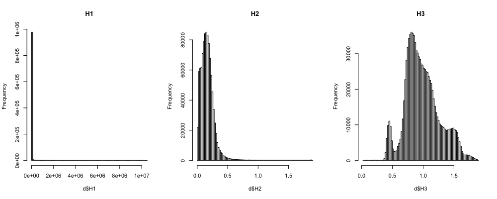
It appears that H1 (activity) is very skewed. Often a
log-transformation is applied to raw activity scores:
d$H1 <- log( d$H1 )
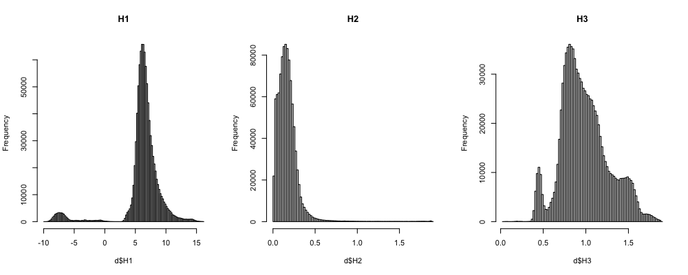
Of note, both (log-transformed) H1 and H3 metrics shows clear multi-modality,
presumably reflecting differences between sleep stages as well as
channels and/or individuals.
We can review per individual:
par(mfcol=c(3,1))
barplot( tapply( d$H1, d$ID, mean ), col = lturbo(100), las=2, main="H1" )
barplot( tapply( d$H2, d$ID, mean ), col = lturbo(100), las=2, main="H2" )
barplot( tapply( d$H3, d$ID, mean ), col = lturbo(100), las=2, main="H3" )
Of note, F04 appears to be a gross outlier for the H1 (activity)
metric (note, this is on a log-scale).
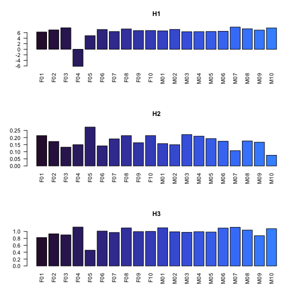
We also see that F05 perhaps appears to be a bit of an outlier.
We'll see what is going on more directly via spectral analysis, but
when we consult the table of signal
manipulations we note that this was
the only recording to be band-pass filtered (1-20 Hz).
With respect to F04 - we can confirm visually that the lower activity values hold for all channels, e.g.
here averaging over epochs:
a <- aggregate( d$H1 , by = list( CH = d$CH, ID = d$ID ) , FUN = mean )
plot(a$x, col=as.factor(a$ID), pch=20, ylab="mean H1", xlab="Indiv/channel" )
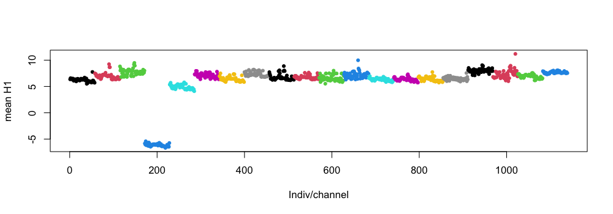
The points are ordered by individual, then channel (and colored by
individual ID); we can clearly see the fourth (blue) set (F04) has
low mean H1 values (across all epochs) for all channels. (We could
have simply looked at the output not stratified by epoch above too,
i.e. destrat out.db +SIGSTATS -r CH).
We can take a look at the EDF headers again to look at the range of
EEG signals for F04 (going back to command line):
luna harm1.lst -o out.db -s HEADERS
Here we extract the physical units, minimum and maximum based on the EDF headers (i.e. technically, the smallest/largest possible values in the EDF, whether or not there is actually an instance that extreme), here only for channel FZ (to reduce output clutter):
destrat out.db +HEADERS -r CH/FZ -v PDIM PMIN PMAX
ID CH PDIM PMAX PMIN
F01 FZ uV 223.325 -361.057
F02 FZ uV 1654.70 -1694.12
F03 FZ uV 1221.58 -466.484
F04 FZ uV 2.00623 -2.97696
F05 FZ uV 376.299 -452.115
F06 FZ uV 3502.42 -1607.19
F07 FZ uV 994.355 -799.459
F08 FZ uV 3663.41 -3002.94
F09 FZ uV 1704.35 -4028.45
F10 FZ uV 1747.34 -2111.80
M01 FZ uV 3436.70 -1238.57
M02 FZ uV 3350.84 -1933.89
M03 FZ uV 1658.28 -2111.74
M04 FZ uV 3856.32 -4326.5
M05 FZ uV 2782.60 -3417.32
M06 FZ uV 1074.79 -1703.58
M07 FZ uV 2401.71 -1082.80
M08 FZ uV 839.666 -559.385
M09 FZ uV 3380.85 -2664.17
M10 FZ uV 3958.20 -701.840
The range appears to be about three orders-of-magnitude smaller for
F04 than for all other recordings, despite all channels having
nominally similar units (uV). There is quite a lot of variability
in the ranges (from ~200 to ~4000) but it is noteworthy that if
multiplied by 1000 (i.e. the scaling difference between milli-volts
and micro-volts, then F04 would sit about right in the middle of all
individuals, in terms of EDF header physical min/max for this channel.
It is also worth noting, however, that EDF headers can have extreme
values (e.g. 4000 uV) because they contain artifact, in the
signal. etc. Therefore, to more realistically compare distributions,
it can be useful to a) restrict to parts of the signal scored as sleep
if available (i.e. less artifact, movement, etc) and b) look at
e.g. 5/95th percentile values rather than absolute (theoretical)
min/max values. We can do this with the STATS command
(here just for FZ for simplicity):
luna harm1.lst -o out.db -s 'MASK ifnot=N2 & RE & STATS sig=FZ '
destrat out.db +STATS -r CH -v P05 P95 -p 4
-p 4 here specifies the number of digits displayed by
destrat)
ID CH P05 P95
F01 FZ -13.1118 75.7381
F02 FZ -45.0810 94.6767
F03 FZ -36.4508 96.7964
F04 FZ -0.1658 0.2606
F05 FZ -28.4717 29.0819
F06 FZ -36.5317 94.8438
F07 FZ -76.2127 13.7586
F08 FZ -35.3029 94.9012
F09 FZ -78.6046 19.0196
F10 FZ -18.7311 82.4363
M01 FZ -75.6559 82.7190
M02 FZ -12.4852 87.0243
M03 FZ -24.2644 67.7210
M04 FZ -34.3746 63.3922
M05 FZ -28.8629 87.7847
M06 FZ -15.8691 71.9313
M07 FZ -75.0649 152.556
M08 FZ -29.6307 72.0292
M09 FZ -35.4833 82.8620
M10 FZ -103.682 133.1061
As before, we see these are still orders-of-magnitude lower than for
the other individuals: as we're blessed with omniscience for
certain aspects of this walkthrough, we in fact know that F04 had
altered signal units, i.e. it was
actually recorded in milli-volts (mV) but incorrectly labelled as
micro-volts (uV) which are 1000-times smaller. Looking at strange
(esp. order-of-magnitude off) ranges can be a clue to this type of
issue.
Multiple errors and dependencies in stages of QC
As it turns out, F04 has both
manipulated (swapped)
staging as well as
purposefully altered signal
units. This will impact the
above comparison (i.e. although we don't know it at this stage of
the walkthrough, the "N2" won't really be N2 for F04 and so this
procedure (of restricting to N2 epochs to evaluate signals) may
have issues. However, we've purposefully included both these
issues together: a) in reality, there is nothing that precludes a
single file from having multiple sources of error or bias,
etc. and b) it underscores the more general point that there can
be chicken-and-egg dependencies in the ordering of QC steps
(e.g. if one requires valid signals in order to review/check
staging annotations, and vice versa).
As the sleep EEG contains qualitatively distinct stages, whole-night summaries of metrics have limited value: we really want to see how things change, as well as channel-specific variation. To this end, we'll go back to R to generate a series of plots that reflect the Hjorth statistics varying over time (epochs) and channel.
Interleaving R and command-line commands
If you quit R to run the above Luna command, you can start up R again and type the following:
library(luna)
d <- read.table( "tmp/hjorth.1" , header=T, stringsAsFactors=F)
d$H1 <- log( d$H1 )
We'll do this separately for each of the 20 individuals:
ids <- unique( d$ID )
We can then make these plots for any individual, e.g. F06:
And make a simple loop, e.g. for visual inspection
dd <- d[ d$ID == "F06" , ]
par(mfcol=c(3,1), mar=c(0.5,0.5,0.5,0.5))
lheatmap( dd$E , dd$CH , dd$H1 )
lheatmap( dd$E , dd$CH , dd$H2 )
lheatmap( dd$E , dd$CH , dd$H3 )
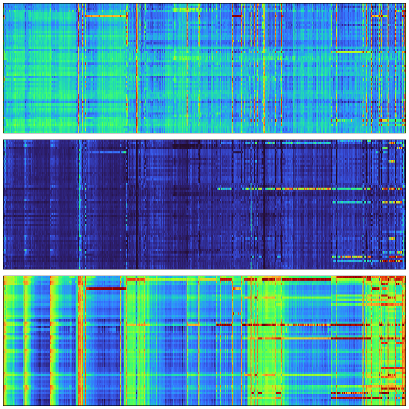
Above, we have three heatmaps for the three Hjorth parameters, with x-axes representing time (epochs) and y-axes representing channels. It is evident in these plots that there are a) clear vertical stripes (i.e. gross, global artifact for that epoch that impact most/all channels), b) horizontal stripes (i.e. channel-specific artifact that may impact some or all of the recording, but often (in this example) starts later in the night and continues to the end, as well as c) evidence of broader "banding", especially for the H3 metric, that likely track with true ultradian physiology, i.e. sleep cycles.
We'll be unpacking these components below. This is not necessarily the most intuitive form of plot, however. In large part, this is because we've lost the information about channel position in the y-axes (i.e. is hard to add visible labels, but more importantly, the current order is arbitrary/alphabetical). Note: if manual staging is present, it is always good to review these types of plots alongside the hypnograms, but we'll skip looking at hypnograms until a later section here. Nonetheless, we can still make some more informative types of plot here.
One simple extension is to use lunaR's ltopo.xy() convenience
function, to make X-Y scatter plots for each channel, but present them
in a layout consistent with the scalp topography (for the same file, F06):
par(mfcol=c(3,1), mar=c(0.5,0.5,0.5,0.5))
ltopo.xy( dd$CH , dd$E , dd$H1 , z = dd$H1 , pch=20 , col = lturbo( 100 ) , cex=0.2 , xlab="Epoch", ylab="log(H1)" )
ltopo.xy( dd$CH , dd$E , dd$H2 , z = dd$H2 , pch=20 , col = lturbo( 100 ) , cex=0.2 , xlab="Epoch", ylab="H2" )
ltopo.xy( dd$CH , dd$E , dd$H3 , z = dd$H3 , pch=20 , col = lturbo( 100 ) , cex=0.2 , xlab="Epoch", ylab="H3" )
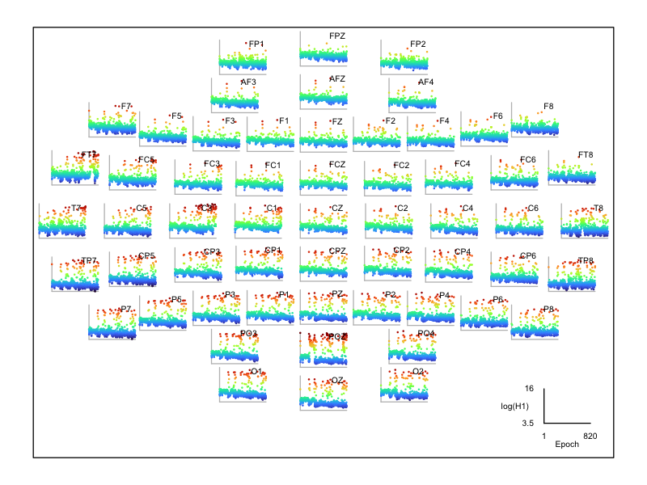
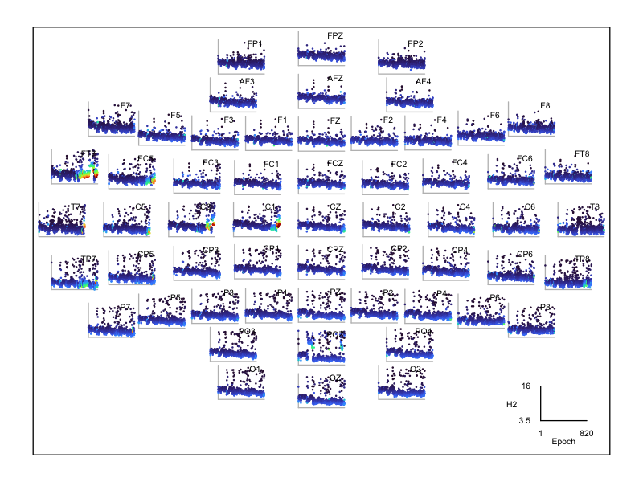
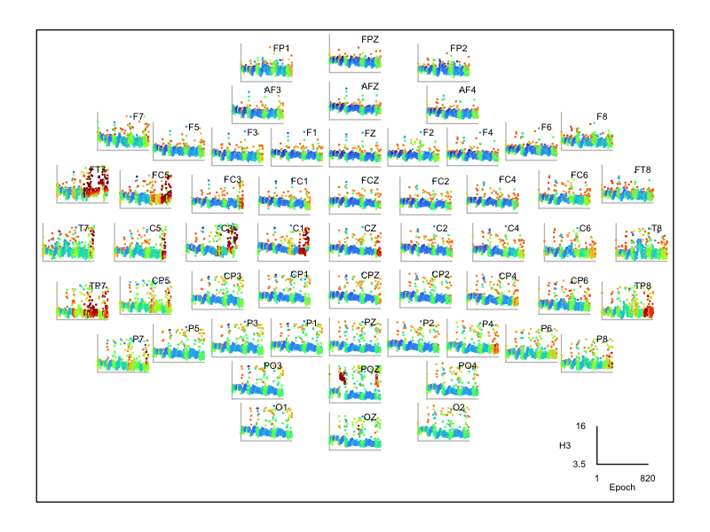
The three plots are ordered for H1, H2 and H3 respectively. These plots make the topographical locations of the artifact much clearer, especially for H2 it is evident that FT7 has extreme values towards the end of the night. Note that these plots will also reflect a degree of true sleep physiology dynamics, e.g. especially those that impact all/many channels and change slowly over the course of minutes/hours.
As a further example of some potential artifact - and note, these
factors were not introduced in the manipulated dataset -- this is
all present from the original (v1) recording. For F10 we see that
FC2 and FC6 look bad towards the end of the night, in particular for
H2:
id="F10"
dd <- d[ d$ID == id , ]
par(mfcol=c(1,1), mar=c(0.5,0.5,0.5,0.5))
ltopo.xy(dd$CH, dd$E, dd$H2, z=dd$H2, pch=20, col=lturbo(100), cex=0.2, xlab="Epoch", ylab="H2")
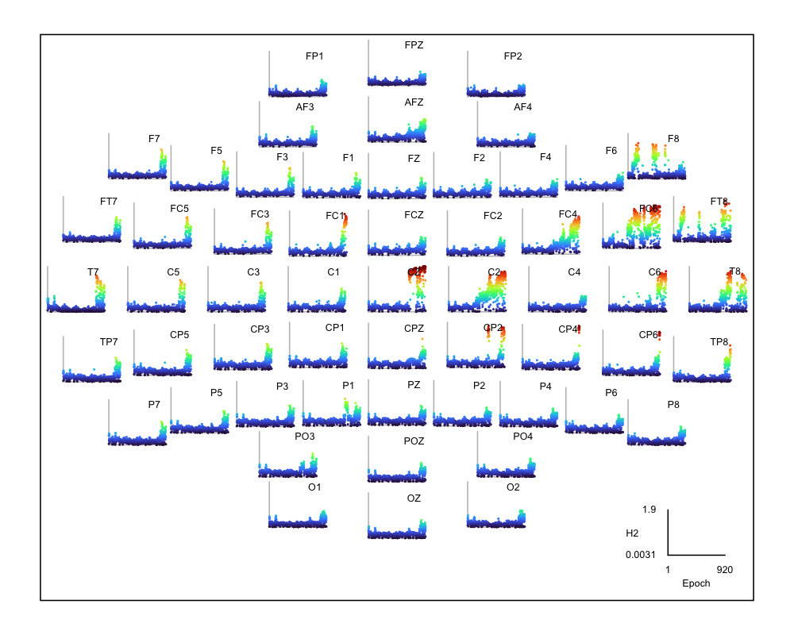
We can use lunapi and scope() to view these signals at different
points in the night: here looking at selected EEG channels
earlier in the night (see position of the dot
at the top) where all channels appear of comparable, high quality
(this shows a quarter-epoch view, 7.5 seconds):
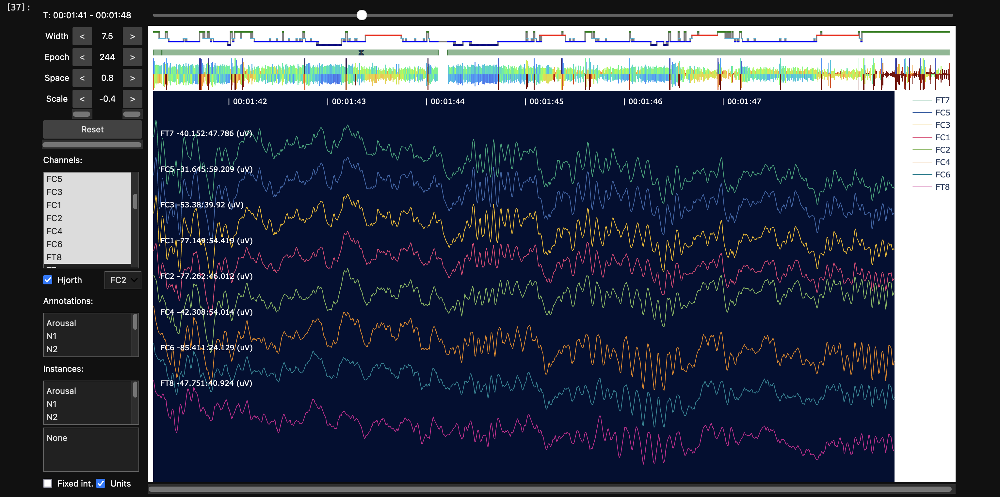
In contrast, later in the same recording, some of the same channels show clear artifact, consistent with high frequency line noise:
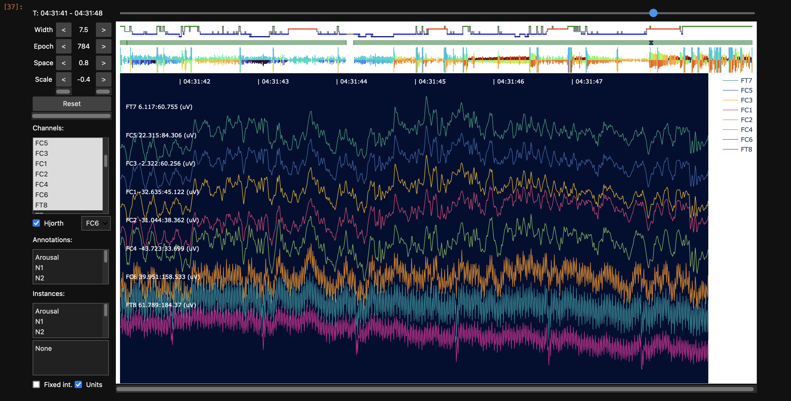
Later in the walkthrough we'll revisit these types of plots to assess quality after interpolation, filtering (which will remove very high frequency artifact in any case), removing extreme/aberrant epochs and restricting to a single sleep stage. In general, it can be useful to perform these types of plots/checks both on "original" signals (as that can more clearly point to the source/nature of artifact prior to altering the signals) but also the "final" analysis-ready datasets (as those, after all, are the ones on which analyses will be based...)
N2 statistics
As a complement to the whole-night QC visualization, it can also be useful to restrict it to a single stage (or at least exclude leading/trailing wake/unknown periods if they are excessively long). In this way, differences between individuals and/or channels can become clearer, after removing one natural source of variation (differences in sleep stage).
To this end, we'll return to the shell command line and run this
script. It picks 10 N2 epochs at random, however, keep in mind, that
we do this just to speed up analysis in the context of this
walkthrough. Naturally, for real projects, you'd want to use all
available data. This script also applies a bandpass filter before
calculating spectral statistics per individual/channel (as noted
above, if you want to save the prior output, use distinct filenames
other than out.db - this holds throughout the walkthrough, but we
won't repeat it going forward):
luna harm1.lst -o out.db \
-s ' EPOCH align & MASK ifnot=N2 & MASK random=10 & RE
FILTER bandpass=0.3,35 tw=0.5,5 ripple=0.01,0.01
PSD spectrum dB sig=${eeg} max=25 '
We'll extract this individual/channel level output to a text file containing power spectra for representative/random N2 epochs, calculated now for filtered signals:
destrat out.db +PSD -r F CH > tmp/s.spec
In R, we'll now load these spectral statistics:
d <- read.table( "tmp/s.spec" , header=T , stringsAsFactors = F )
head(d)
ID CH F PSD
1 F01 Fp1 0.50 20.57150
2 F01 Fp1 0.75 21.23700
3 F01 Fp1 1.00 20.23428
4 F01 Fp1 1.25 18.31134
5 F01 Fp1 1.50 16.94335
6 F01 Fp1 1.75 15.76659
As we added dB to Luna's PSD command that implements the Welch spectral
method, the output power density values will already be log-scaled. The output contains frequency bins from 0.5 to 25 Hz in 0.25 Hz steps:
ids <- unique( d$ID )
fxs <- unique( d$F )
a <- setNames( aggregate( d$PSD , by=list(ID=d$ID, F=d$F), FUN=mean, na.rm=T),
c("ID","F","PSD") )
ylim <- range( a$PSD )
plot( fxs , fxs , type="n" , ylim = ylim ,
xlab = "Frequency (Hz)" , ylab = "log(Power)" , main = "" )
for (id in ids )
lines( fxs , a$PSD[ a$ID == id ] , lwd=2 , col = rgb( 0,0,255,100,max=255) )
lines( fxs , a$PSD[ a$ID == "F04" ] , lwd=2 , col = rgb( 255,0,0,100,max=255) )
lines( fxs , a$PSD[ a$ID == "F05" ] , lwd=2 , col = rgb( 0,255,0,100,max=255) )
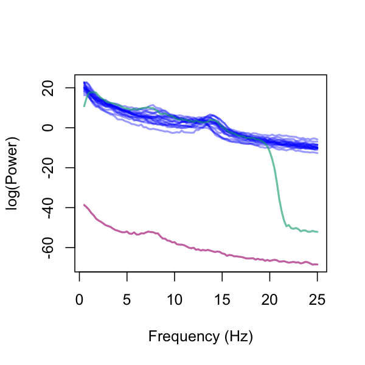
In this plot, we highlighted F04 in maroon and F05 in green, with the
remaining individuals shown in blue. It’s clear that F04 and F05 are
outliers, while the spectral power curves of the other individuals
appear quite uniform. To examine this further, we will remove the two
outliers and regenerate the plot:
d2 <- d[ ! ( d$ID == "F04" | d$ID == "F05" ) , ]
a <- setNames( aggregate( d2$PSD, by=list(ID=d2$ID, F=d2$F), FUN=mean, na.rm=T ),
c("ID","F","PSD") )
ylim <- range( a$PSD )
plot( fxs , fxs , type="n" , ylim = ylim ,
xlab = "Frequency (Hz)" , ylab = "log(Power)" , main = "" )
for (id in unique(a$ID) )
lines( fxs , a$PSD[ a$ID == id ] , lwd=2 , col = rgb( 0,0,255,100,max=255) )
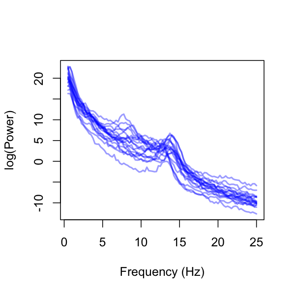
Alternatively, we can average over individuals to plot one line per channel:
d2 <- d[ ! ( d$ID == "F04" | d$ID == "F05" ) , ]
a <- setNames( aggregate( d2$PSD, by=list(ID=d2$CH, F=d2$F), FUN=mean, na.rm=T ) ,
c("CH","F","PSD") )
ylim <- range( a$PSD )
chs <- unique( a$CH )
nchs <- length( chs )
pal <- lturbo( nchs )
plot( fxs , fxs , type="n" , ylim = ylim ,
xlab = "Frequency (Hz)" , ylab = "log(Power)" , main = "" )
for (ch in 1:nchs )
lines( fxs , a$PSD[ a$CH == chs[ch] ] , lwd=1 , col = pal[ ch ] )
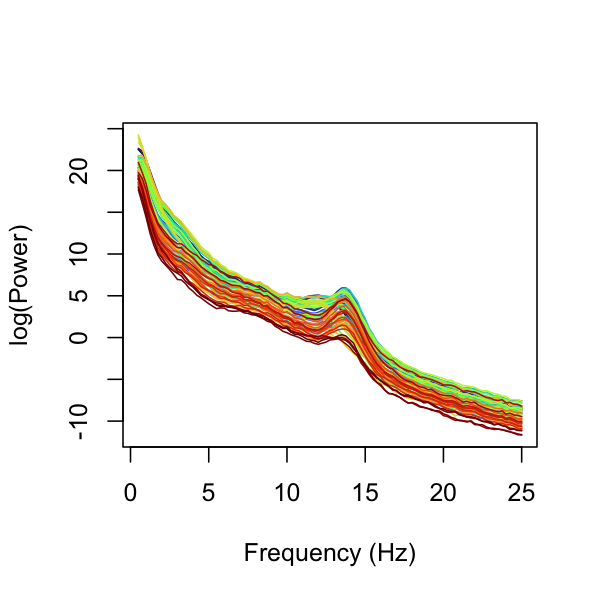
In the above plot, now that outlier subjects have been removed, a 1/f pattern in the EEG power spectra as well as clear sigma (11-15 Hz) peaks are visible for all channels, consistent with typical N2 sleep EEG.
Finally, having looked at the means, for a small sample size such as this, we can plot the full set of power spectra for each individual. Here, we'll generate a grid of 20 figures (per individual), in each plotting the mean power (across channels) in either red or blue (for female and male subjects) as well as the channel-specific N2 power spectra (remembering, this is based only on 10 randomly-selected epochs):
a <- setNames( aggregate(d$PSD, by=list(ID=d$ID, F=d$F), FUN=mean),
c("ID","F","PSD") )
ylim <- range( a$PSD )
ids <- unique(a$ID)
par(mfrow=c(4,5),mar=c(0.1,0.1,1,0.1))
for (id in ids ) {
di <- d[ d$ID == id , ]
plot( fxs , a$PSD[ a$ID == id ], ylim=ylim, type="n",
main=id, axes=T, xaxt='n', yaxt='n')
chs <- unique( di$CH )
for (ch in chs)
lines( fxs , di$PSD[ di$CH == ch ] , lwd=1 ,
col = rgb(100,100,100,100,max=255) )
lines( fxs , a$PSD[ a$ID == id ] , lwd=2 ,
col = ifelse( substr(id,1,1) == "M" , "blue", "red") )
abline( v = c(5,10,15) , lty=2 , col = "lightgray" , lwd=1 )
}
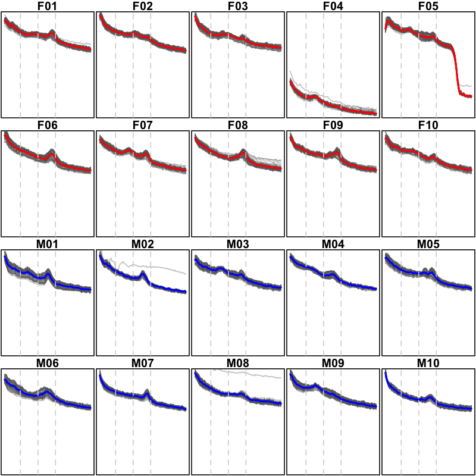
These plots have the y-axes constrained to be equal across all individuals, which is useful for highlighting the differences between individuals. We can alternatively make the same set but allow the y-axis to vary according to each individual's data, to make the between-channel effects clearer:
a <- setNames( aggregate(d$PSD, by=list(ID=d$ID, F= d$F), FUN=mean),
c("ID","F","PSD") )
par(mfrow=c(4,5),mar=c(0.1,0.1,1,0.1))
for (id in ids ) {
di <- d[ d$ID == id , ]
ylim = range( di$PSD )
plot( fxs , a$PSD[ a$ID == id ], ylim=ylim, type = "n",
main=id, axes=T, xaxt='n', yaxt='n')
chs <- unique( di$CH )
for (ch in chs)
lines( fxs , di$PSD[ di$CH == ch ] , lwd=1 ,
col = rgb(100,100,100,100,max=255) )
lines( fxs , a$PSD[ a$ID == id ] , lwd=2 ,
col = ifelse( substr(id,1,1) == "M" , "blue", "red") )
abline( v = c(5,10,15) , lty=2 , col = "lightgray" , lwd=1 )
}
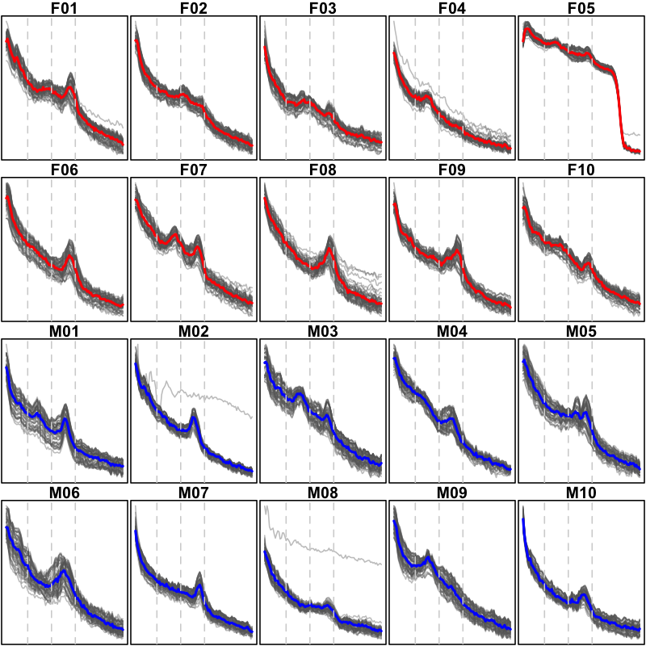
Having reviewed these EEG signals we've concluded the following:
-
F04appears to have incorrect units (uV but should be mV) for raw scalp EEG, relative to the other 19 individuals -
based on epoch-wise, channel-specific Hjorth statistics, we've generated plots that indicate the likely presence of line-noise or other types of extreme artifact
-
focusing on N2 power spectra, we see the typical 1/f slope for the log-scaled PSD curves as well as evidence of peaks around sigma range, indicative of (true) physiological spindle activity
-
when looking person-by-person at the power spectra, some individuals appear to have spectral peaks at other modes (when averaging over all channels); we'll return to these details later, although for now we'll note that we have yet to confirm the accuracy/correctness of sleep staging annotations, which could naturally impact the interpretation of these plots
Next, we'll look at EEG polarity to scan for potentially flipped signals.